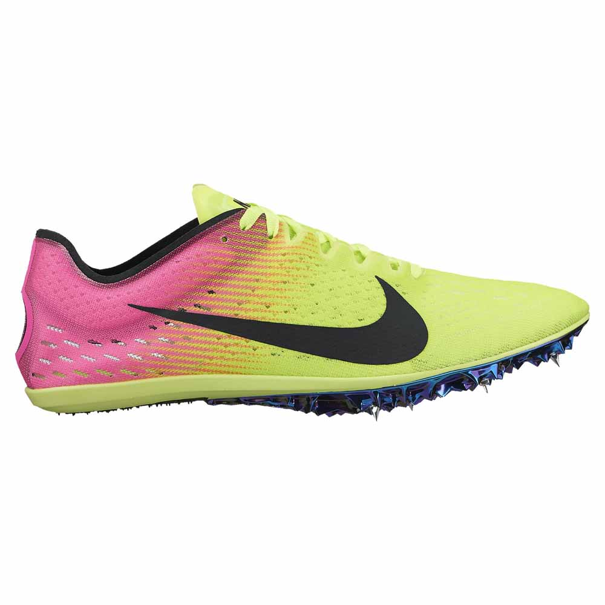
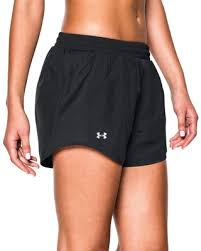

Shoes
When it comes to track, I have the most background in the running events, so this is what I will mostly be talking about.
To start off, the only thing that is absolutely necassary is your shoes. Now, this may sound very simple; however,
in reality there are a bijillion different types of running shoes that you can get. To decide what you need to buy for this sport,
you first must ask your coach what events you will be doing: sprints, middle, or long distance. I would
suggest getting two pairs of shoes. The first pair would be your everyday running shoes, that you will use for practice.
There are some brands that are better than others, but what really matters is if you are comfortable in them. Also, you may need
a stability, cushioning, motion control, or just a neutral shoe. These different types may be necessary depending on how you run,
your arch, and other factors. You can find out which type you will need by visiting your local Saucony, Miles Ahead, or other
professional, customer oriented stores. They can have you run on a treadmill, the wet foot test, or even look at the wear patterns
on the bottom of your old running shoes. The next pair should be your racing shoes. If you are not comfortable with wearing spikes
or flats, you could just wear your everyday running shoes. Spikes help keep you versatile and there are several different ways
that you could wear them based on how long your race is. There are long distance, cross country, and several other types, so be
certain that you have bought the correct ones. While they are not necassary, I would suggest getting them
once you get serious about this sport; however, if you are just trying running out to see if you like it, maybe just buy an
everyday pair until you are certain you will stick with it.

Clothes
The rest of the gear that you may need depends on where you live and you personal preference. Lets start with clothes.
Depending on where you live, you may need more clothes suited for a certain temperature and weather; but, it is always good to
have all of the basics. For hot weather, it is absolutely, positively necassary to have several tanks tops and shorts. I would recommend
the Under Armour Microthread Train Twist,
Under Armour Fly-By shorts, and
the Nike Elevate or Tempo running
shorts. Another thing I personally like to have are Nike Pros. These kind of have controversial reviews, so it just depends
on you personal preference. As the weather gets colder, buy layers that you can shed as you warm up in the cold weather.
Wearing capris or pants is also helpful when you are trying to stay warm in the winter. I really love to wear capri leggings
with either a long sleeve dri-fit or a short sleeve with a sweatshirt or pull over. Honestly, I think that buying a few sweatshirts is extremely helpful,
for they are extremely easy to take off when you get too warm. Lastly, be certain to buy socks that are comfortable and aren't to small.
Trust me, blisters hurt.

Random
It is always the small things that make the most impact when you forget them, I am sure that you all have felt those effects. For cross country
and track I always make sure that I pack my bag (an Adidas duffel bag) with all the essential. The first thing that I always make sure I have is water.
No matter how hot or cold it is, how long you are going to run, or, well, any other factors, make sure that you ALWAYS have water. Always.
Dehydration just makes you dizzy, tired, and slow. You do not want to lose your meet just because you didn't drink some water.
Snacks are also pretty important. When you are at an extremely long meet and you are just starving, you are probably wishing you had
some food. I even include some band aids (in case I wipe out), extra headbands, hair ties, flip flops, extra socks, deoderent, money, sunscreen,
warm ups, tissues, chapstick, headphones, and my phone charger. Some of these may not be necassary for you, but for me these are the basic essentials to bring to a meet.